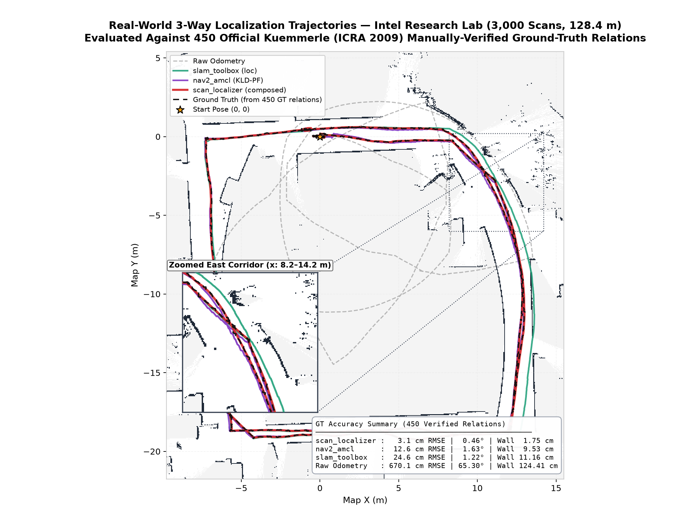

9.1先划清证据边界：历史结果不是本轮复现
下列 E1–E10 与 Intel Lab 数字是仓库原有文档中的已声明结果，本章保留它们用于讲解实验设计；本章没有重跑 C++ 基准或 ROS 2 回放，因此不能把它们写成本轮复现、独立复核或新证据。交互实验台生成的也是明确标记的合成协议样本，不会反算这些静态指标。
点击切换维度，比较仓库已声明的 Intel Lab 真值精度、E7 单帧耗时与 E2 大误差捕获结果。读图时同时问：输入是否配对？失败是否计入？计时从哪里开始？这些数字能否从逐行原始数据复算？
图表数值与 9.2 表格均为静态声明；切换按钮只改变展示维度，不触发 benchmark.cpp，也不读取 Intel Lab 原始日志。
9.2Intel Lab 450 组精校真值：保留图表，补上审计问题
原有结果声明：在相同 591×580 (0.05m) 静态先验地图上，以 ROS 2 Jazzy use_sim_time:=true 40 Hz 顺序回放 intel.clf 全长 128.42 m 环路（3,000 帧激光），采用 450 组来自 AIS Freiburg 官方 Kümmerle (ICRA 2009) 的人工精校 SE(2) 真值关系（含 127 个跨回环约束 Δt > 20s）评测三方系统。
| 定位方案 | 有效更新数 | GT 平移 RPE RMSE | GT 中位误差 | 回环误差 (>20s) | GT 航向 RMSE | WallDist 贴墙率 (<10cm) | 总 CPU 占比 / 单帧 | 峰值 RSS |
|---|---|---|---|---|---|---|---|---|
| scan_localizer (Composed) | 3,000 | 3.06 cm | 1.57 cm | 2.95 cm | 0.46° | 97.4% (1.75 cm) | 12.07% (3.10 ms) | 46.36 MB |
| nav2_amcl (KLD-PF 500–2000) | 517 | 12.57 cm | 3.64 cm | 22.60 cm | 1.63° | 76.0% (9.53 cm) | 4.10% (1.05 ms) | 35.66 MB |
| slam_toolbox (Localization) | 498 | 24.56 cm | 2.28 cm | 43.99 cm | 1.22° | 74.7% (11.16 cm) | 40.70% (10.44 ms) | 68.34 MB |
| Raw Odometry (对照组) | 3,000 | 670.12 cm | — | 1261.40 cm | 65.30° | 13.1% | — | — |

scan_localizer（蓝）全程紧贴真值与走廊墙壁。

真正复现这张表，至少还要冻结并随结果导出：数据集与地图摘要、二进制和依赖版本、完整参数、每个系统的原始输出、真值时间对齐规则、有效/拒收帧清单、计时边界与主机配置。仅凭汇总表无法判断 517 次有效更新和 3,000 次有效更新是否使用了相同任务口径。
9.3从零写最小公平基准：先协议，后代码
最小实验不是“跑两个函数看看谁数值小”，而是一条不可回滚的证据链：假设 → 配对输入 → 固定随机流 → 统一判据 → 逐行原始数据 → 独立复算。先冻结下面这张实验卡，再看任何输出。
| 实验卡字段 | 本章最小约定 | 防止哪种自欺 |
|---|---|---|
| 研究问题与假设 | H1：同一地图、扫描、先验和每次调用预算下，A 的配对平移误差中位数比 B 低至少 5 mm。H0：不满足该阈值。只覆盖声明的仿真场景。 | 跑完再挑最好看的指标或最好看的子集。 |
| 试验单元 | 一对共享输入 (map, scan, prior, GT, case_id)；A/B 必须逐项同源。建议至少 20 对，默认教学试验 40 对。 | 各自随机生成“差不多”的数据，却称为配对。 |
| 随机流 | 一个基准种子派生 case / role-A / role-B 三条独立流；输入在候选循环外生成；记录解析后的种子。 | 只写 seed=42，却让代码顺序隐式消费随机数。 |
| 执行顺序 | 逐对 AB/BA 交替；算法随机流按角色和 case_id 隔离，不依赖执行先后。 | A 永远先跑，缓存、温度或调度只惠及一方。 |
| 主指标与可靠性护栏 | H1 主指标为配对平移误差中位数差 median(e_Ai-e_Bi)；同时报告任务成功率（e_i < 0.05 m 且 |θ_i| < 1°）、有效输出误差中位数/P90。成功率使用全部调用作分母。 | 删除失败、只报成功样本的误差或只报平均数。 |
| 资源指标 | 同一计时边界内记录每次调用延迟；报告全调用中位数/P90，并另列超时失败。预算不等时，不能宣称等资源精度优势。 | A 只计匹配，B 却计初始化、预测和更新。 |
| 无效输出 | NaN、无穷、非有限位姿或超预算一律保留原始行，计为失败；误差为空，不伪造为 0。 | 把坏输出过滤后分母变小，得到虚假的低误差。 |
| 原始数据 | 每次调用一行：case/role 种子、输入摘要、输出、误差分量、延迟、有效性与成功标志；配置与汇总单独保存。 | 只有一张汇总表，无法定位错误或复算。 |
配对差只在双方都有效的配对上计算，同时必须报告完整配对覆盖率；误差中位数/P90只在有效输出上计算，并与失败数并列。不能用空误差替代失败，也不能把条件均值冒充全调用指标。
下面的教学骨架把“测量一次”和“跑配对试验”分开。它刻意不实现任何定位算法：Algorithm 是待审查的黑盒。核心纪律是先逐行打印原始记录，再打印汇总；无效输出也占一行。
#include <algorithm>
#include <array>
#include <chrono>
#include <cmath>
#include <cstdint>
#include <functional>
#include <iostream>
#include <random>
#include <string>
#include <vector>
struct Case {
std::uint32_t id;
std::array<double, 3> gt, prior;
std::vector<double> ranges;
};
struct Prediction { bool valid; std::array<double, 3> pose; };
struct RawRow {
std::uint32_t case_id, role_seed;
std::string arm;
bool valid, success;
double pos_err, ang_err_deg, latency_ms;
};
using Algorithm = std::function<Prediction(const Case &, std::mt19937 &)>;
using Clock = std::chrono::steady_clock;
std::uint32_t splitmix32(std::uint32_t x) {
x += 0x9e3779b9u;
x = (x ^ (x >> 16)) * 0x21f0aaadu;
x = (x ^ (x >> 15)) * 0x735a2d97u;
return x ^ (x >> 15);
}
RawRow measure(const Case & c, const std::string & arm,
std::uint32_t role_seed, const Algorithm & algorithm) {
// 每个 role/case 独立造流；执行顺序不再改变算法随机数。
std::seed_seq seq{role_seed, c.id};
std::mt19937 rng(seq);
const auto t0 = Clock::now();
const Prediction p = algorithm(c, rng);
const double ms = std::chrono::duration<double, std::milli>(
Clock::now() - t0).count();
const bool finite = p.valid &&
std::all_of(p.pose.begin(), p.pose.end(),
[](double v) { return std::isfinite(v); });
const double e = finite ? std::hypot(
p.pose[0] - c.gt[0], p.pose[1] - c.gt[1]) : NAN;
const double a = finite ? std::abs(std::remainder(
p.pose[2] - c.gt[2], 2.0 * std::acos(-1.0))) : NAN;
const bool success = finite && e < 0.05 &&
a * 180.0 / std::acos(-1.0) < 1.0;
return {c.id, role_seed, arm, finite, success, e,
a * 180.0 / std::acos(-1.0), ms};
}
void paired_run(const std::vector<Case> & cases,
const Algorithm & a, const Algorithm & b,
std::uint32_t seed) {
const auto seed_a = splitmix32(seed ^ 0xA001u);
const auto seed_b = splitmix32(seed ^ 0xB002u);
std::vector<RawRow> raw;
for (std::size_t i = 0; i < cases.size(); ++i) {
const auto & c = cases[i];
// 按循环索引 AB/BA 交替；A/B 仍消费各自的 role/case 流。
if (i % 2 == 0) {
raw.push_back(measure(c, "A", seed_a, a));
raw.push_back(measure(c, "B", seed_b, b));
} else {
raw.push_back(measure(c, "B", seed_b, b));
raw.push_back(measure(c, "A", seed_a, a));
}
}
// 原始行优先于汇总；真实项目应同时保存 map/scan/config 摘要。
std::cout << "case_id,arm,role_seed,valid,success,pos_err_m,"
"ang_err_deg,latency_ms\n";
for (const auto & r : raw) {
std::cout << r.case_id << ',' << r.arm << ','
<< r.role_seed << ',' << r.valid << ','
<< r.success << ',';
if (r.valid) {
std::cout << r.pos_err << ',' << r.ang_err_deg;
} else {
std::cout << "null,null"; // 失败不伪造为零误差
}
std::cout << ',' << r.latency_ms << '\n';
}
// 复算器只读取上面的原始行；不得回读算法内部状态。
}固定种子只固定随机流。跨平台复现还必须记录编译器、标准库、CPU、构建类型、依赖版本和算法参数；同一源码在不同 std:: 分布实现上也不保证逐位相同。配对实验降低方差，但不能替代独立重复与不确定性报告。
9.4交互实验台：配置、公平性检查、原始数据与复算
这是一个纯浏览器合成协议沙盘：候选由声明好的教学模型代替，不执行 C++ 匹配器，也不产生 Intel Lab 或 E1–E10 真实性能结论。它让你在安全环境中故意破坏配对、预算、计时或失败处理，观察审计器如何拒绝“看起来很好”的结论。
修改配置后点击“只检查公平性”，或直接运行。
| 检查项 | 结果 | 说明 |
|---|
| case | arm | order | valid | success | pos err (m) | ang err (deg) | latency (ms) | input digest |
|---|
预览只显示前 8 行；JSONL/CSV 下载包含全部导出指标行，完整激光 ranges 保留在 JSONL 的 input 中。复算按钮先序列化再解析 JSONL，从原始 GT 与输出 pose 重算误差、成功标志和汇总指纹，不信任行内预计算值。
9.5真实 benchmark.cpp 源码步进：读懂实现，也审计实现
以下片段逐字取自当前分支的 src/scan_localizer/test/benchmark.cpp，并标出真实行号。它们不是理想化重写：尤其注意单一 rng(42)、候选顺序消费随机流，以及 E9 两个架构并不相同的计时边界。点击“下一步”逐段对照实验卡。
rng(42)能固定一条全局随机流，却不能自动保证“改代码顺序仍同输入”。E1/E2 的输入在候选循环前生成，是配对的基础；更严格的教学协议会按 case/role 分流并导出每条输入。- E4 当前代码检查
min_boxes_per_trial <= 0时直接失败；正常运行N1=100、每轮尝试注入 2 箱，因此预期累计 200 箱且每轮至少 1 箱。准确说法是“校验实际注入”，不是代码里写了固定 200 箱门限。 - E9 架构 A 的
cpu_ms_sum包含每个on_odom与扫描帧；架构 B 只在扫描帧计时predict/update/estimate，累计增量的合成在计时外。两侧输入虽配对，当前 CPU 数字却不能直接当同口径性能对比。 - E10 在当前打滑档位内预生成配对 odom/gyro，再切换 IMU 开关，变量隔离比 E9 清晰；但跨档位仍消费同一全局 RNG，复现时应保存全部种子与配置。
仓库还提供可运行的 BenchmarkRegression 回归（E1/E4/E5/E8）。它们适合守定量不变量，不等于完整独立复现。实际复核命令：
source /opt/ros/jazzy/setup.bash
source ../../install/setup.bash
colcon build --packages-select scan_localizer --cmake-args -DCMAKE_BUILD_TYPE=Release
./install/scan_localizer/lib/scan_localizer/scan_localizer_benchmark
colcon test --packages-select scan_localizer
colcon test-result --verbose9.6识别自欺实验：三道验收题
每题都给出一份“看起来很合理”的实验声明。先指出它是否支持结论，再提交；验收要求三题全部通过，并能在实验台复现对应陷阱。
- 能写出一条可证伪的 H1，并明确场景、样本单元、主指标与最小增益。
- 能解释配对输入、角色随机流、AB/BA 顺序与统一预算分别控制什么。
- 能从原始行复算成功率、误差中位数/P90、配对差，并保留失败分母。
- 能指出 E4 实际注入校验、E9 计时边界与 E10 配对消融的差异。
- 三题全部通过，且能说明为什么 Intel Lab 静态表不是本轮复现。
练习验收尚未完成。